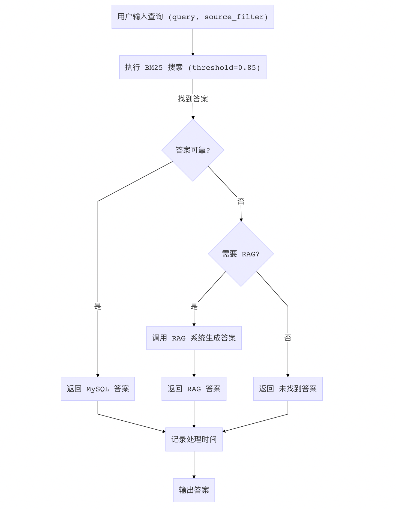

融合 FAQ 和知识库查询¶
学习目标：¶
- 理解智能问答系统的端到端工作流程。
- 掌握 MySQL FAQ 和 RAG 系统的集成与协调。
- 学习如何通过日志记录和错误处理提升系统健壮性。
old_main.py 是一个融合 MySQL FAQ 和 RAG 系统的交互式问答程序，专注于快速、精准的答案生成。它通过 MySQL 提供结构化数据的高效查询，通过 RAG 系统处理复杂问题，同时配备日志记录和用户友好的命令行界面，适合教育场景的实时问答需求。
1 查询流程图¶
以下是智能问答系统的查询流程图，展示从用户输入到答案输出的完整逻辑。

2 流程说明¶
- 输入处理：用户提供查询 (
query) 和可选的学科过滤 (source_filter)。 - BM25 搜索：使用 BM25 算法在 MySQL 知识库中搜索，设置相似度阈值 0.85。
- 答案判断：
- 若找到可靠答案（相似度 > 0.85），直接返回。
- 若无可靠答案且需要 RAG，调用 RAG 系统生成答案。
- 若无需 RAG，返回“未找到答案”。
- 日志记录：记录查询内容、答案和处理时间，便于调试和性能分析。
- 输出：将答案返回给用户。
3 代码介绍¶
以下是 old_main.py 的完整代码，包含详细注释，逐行解析功能与实现逻辑。
3.1 导入必备的工具包¶
# 导入 MySQL 系统组件，用于数据库操作和搜索
from mysql_qa import MySQLClient, RedisClient, BM25Search
# 导入 RAG 系统组件，用于知识库检索和答案生成
from rag_qa import VectorStore, RAGSystem
# 导入配置和日志工具，用于系统配置和日志记录
from base import logger, Config
# 导入 OpenAI 客户端，用于调用 DashScope API
from openai import OpenAI
# 导入时间库，用于记录处理时间
import time
3.2 系统初始化¶
- (
__init__) 初始化方法 - 功能：初始化日志、配置、数据库客户端、搜索模块、向量存储和 RAG 系统。
- 关键点：通过 Config 管理 API 密钥和模型参数，异常处理确保 OpenAI 客户端初始化成功。
class IntegratedQASystem:
def __init__(self):
# 初始化日志工具，用于记录系统运行信息
self.logger = logger
# 初始化配置对象，加载系统参数
self.config = Config()
# 初始化 MySQL 客户端，用于数据库操作
self.mysql_client = MySQLClient()
# 初始化 Redis 客户端，用于缓存管理
self.redis_client = RedisClient()
# 初始化 BM25 搜索模块，结合 MySQL 和 Redis
self.bm25_search = BM25Search(self.redis_client, self.mysql_client)
try:
# 初始化 OpenAI 客户端，连接 DashScope API
self.client = OpenAI(api_key=self.config.DASHSCOPE_API_KEY, base_url=self.config.DASHSCOPE_BASE_URL)
except Exception as e:
# 记录 OpenAI 初始化失败的错误日志
self.logger.error(f"OpenAI 客户端初始化失败: {e}")
# 抛出异常，终止初始化
raise
# 初始化向量存储，用于 RAG 系统的知识库管理
self.vector_store = VectorStore()
# 初始化 RAG 系统，传入向量存储和 DashScope API 调用函数
self.rag_system = RAGSystem(self.vector_store, self.call_dashscope)
3.3 调用 DashScope API¶
- (
call_dashscope) 方法 - 功能：通过 OpenAI 客户端调用 DashScope API，基于用户提示生成答案。
- 关键点：设置系统提示为“你是一个有用的助手”，异常处理捕获 API 调用失败，返回错误信息。
def call_dashscope(self, prompt):
# 定义调用 DashScope API 的方法，生成自然语言答案
try:
# 创建聊天完成请求，调用 DashScope API
completion = self.client.chat.completions.create(
model=self.config.LLM_MODEL, # 使用配置中的语言模型
messages=[
{"role": "system", "content": "你是一个有用的助手。"}, # 系统提示
{"role": "user", "content": prompt}, # 用户输入的提示
]
)
# 检查响应是否有效，返回答案内容
return completion.choices[0].message.content if completion.choices else "错误：无效的 LLM 响应"
except Exception as e:
# 记录 API 调用失败的错误日志
self.logger.error(f"LLM 调用失败: {e}")
# 返回错误信息，便于调试
return f"错误：LLM 调用失败 - {e}"
3.4 查询处理¶
- (
query) 方法 - 功能：处理用户查询，优先通过 BM25 搜索 MySQL，若无可靠答案则回退到 RAG 系统。
- 关键点：设置 BM25 相似度阈值 0.85，记录查询和处理时间，支持学科过滤。
def query(self, query, source_filter=None):
# 定义查询方法，处理用户输入的查询
start_time = time.time() # 记录查询开始时间
# 记录查询信息到日志
self.logger.info(f"处理查询: '{query}'")
# 执行 BM25 搜索，获取答案和是否需要 RAG 的标志
answer, need_rag = self.bm25_search.search(query, threshold=0.85)
if answer:
# 如果找到可靠答案，记录答案到日志
self.logger.info(f"MySQL 答案: {answer}")
# 计算处理时间
processing_time = time.time() - start_time
# 记录处理时间到日志
self.logger.info(f"查询处理耗时 {processing_time:.2f}秒")
# 返回 MySQL 答案
return answer
elif need_rag:
# 如果需要 RAG，记录回退信息到日志
self.logger.info("无可靠 MySQL 答案，回退到 RAG")
# 调用 RAG 系统生成答案，支持学科过滤
answer = self.rag_system.generate_answer(query, source_filter=source_filter)
# 记录 RAG 答案到日志
self.logger.info(f"RAG 答案: {answer}")
# 计算处理时间
processing_time = time.time() - start_time
# 记录处理时间到日志
self.logger.info(f"查询处理耗时 {processing_time:.2f}秒")
# 返回 RAG 答案
return answer
else:
# 如果无答案，记录信息到日志
self.logger.info("未找到答案")
# 计算处理时间
processing_time = time.time() - start_time
# 记录处理时间到日志
self.logger.info(f"查询处理耗时 {processing_time:.2f}秒")
# 返回默认答案
return "未找到答案"
3.5 命令行交互¶
- (
main) 函数 - 功能：提供交互式命令行界面，接受用户查询和学科过滤，显示答案。
- 关键点：验证学科过滤的有效性，异常处理和资源清理确保系统健壮。
def main():
# 定义主函数，提供命令行交互界面
qa_system = IntegratedQASystem() # 初始化问答系统
try:
# 打印欢迎信息
print("\n欢迎使用集成问答系统！")
# 打印支持的学科类别
print(f"支持的来源: {qa_system.config.VALID_SOURCES}")
# 提示用户输入查询或退出
print("输入查询进行问答，输入 'exit' 退出。")
while True:
# 获取用户输入的查询
query = input("\n输入查询: ").strip()
if query.lower() == "exit":
# 如果用户输入 exit，记录退出日志
logger.info("退出系统")
# 打印退出信息
print("再见！")
# 退出循环
break
# 获取用户输入的学科过滤
source_filter = input(f"输入来源过滤 ({'/'.join(qa_system.config.VALID_SOURCES)}) (按 Enter 跳过): ").strip()
if source_filter and source_filter not in qa_system.config.VALID_SOURCES:
# 如果学科过滤无效，记录警告日志
logger.warning(f"无效来源 '{source_filter}'，忽略过滤")
# 打印无效信息，忽略过滤
print(f"无效来源 '{source_filter}'，继续无过滤。")
source_filter = None
# 执行查询，获取答案
answer = qa_system.query(query, source_filter)
# 打印答案
print(f"\n答案: {answer}")
except Exception as e:
# 记录系统错误日志
logger.error(f"系统错误: {e}")
# 打印错误信息
print(f"发生错误: {e}")
finally:
# 无论是否发生错误，关闭 MySQL 连接
qa_system.mysql_client.close()
if __name__ == "__main__":
# 如果脚本作为主程序运行，调用 main 函数
main()
章节总结¶
本章展示了如何通过 old_main.py 构建一个融合 MySQL FAQ 和 RAG 的智能问答系统。系统利用 BM25 算法快速匹配结构化数据，RAG 系统处理复杂查询，配备日志记录和错误处理，适合教育场景下的实时问答需求。